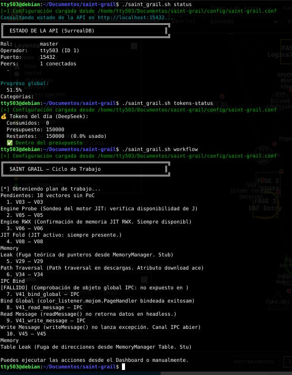
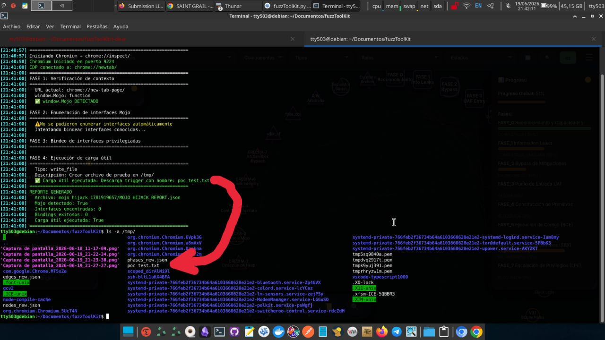
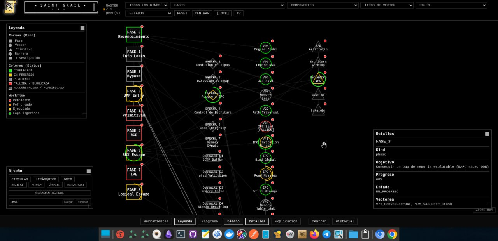

SAINT GRAIL: De Python a Go, Resultados Concretos y el Futuro del Bug Hunting Autónomo
El prototipo en Python ya funcionaba. Pero necesitaba rendimiento extremo, concurrencia real y un uso eficiente de la memoria para que el agente híbrido pudiera escalar. La migración a Go no solo cumplió eso, sino que también generó dos PoCs funcionales que demuestran el valor del sistema.
/índice +
00. Retomando el Camino
Hace unas semanas publiqué el artículo sobre SAINT GRAIL, la plataforma modular para investigación de seguridad ofensiva que construí en Python con Flask, SurrealDB y un agente híbrido que integraba DeepSeek y DeepWiki. La respuesta fue buena y el sistema demostró ser funcional, pero rápidamente me topé con los límites del enfoque.
El prototipo en Python era ágil para desarrollar, pero al escalar el número de vectores, nodos y la cantidad de datos JSON que se movían entre los módulos, el cuello de botella se hizo evidente. La latencia en la serialización/deserialización, el consumo de memoria y la imposibilidad de aprovechar el paralelismo real (GIL) empezaron a frenar el ciclo de investigación. Necesitaba un motor que pudiera procesar cientos de vectores en paralelo, parsear estructuras pesadas en milisegundos y liberar recursos para el LLM local.
La respuesta fue Go. No por moda, sino por razones técnicas muy concretas. Y los resultados no tardaron en llegar.
Este artículo es la continuación directa de SAINT GRAIL: Una Plataforma Modular para Investigación de Seguridad Ofensiva con IA. Si no has leído el anterior, te recomiendo hacerlo para entender el origen del proyecto.
01. ¿Por qué Migrar a Go?
La decisión de migrar el orquestador central de Python a Go no fue trivial. Implicó reescribir cientos de líneas de código, adaptar la lógica de concurrencia y rediseñar la interacción con la base de datos. Pero los beneficios superaron con creces el esfuerzo.
Estas son las razones clave que me llevaron a dar el salto, basadas en las conclusiones de la investigación y la experiencia con el prototipo:
- Rendimiento en serialización JSON: Python convierte cada clave de un JSON en un diccionario dinámico, lo que ralentiza la manipulación de grandes estructuras. Go, con sus structs tipados, parsea y rearma JSON hasta 15 veces más rápido, reduciendo drásticamente la latencia en el intercambio de nodos y aristas entre el agente y la API.
- Concurrencia nativa sin bloqueos: Las goroutines de Go consumen apenas 2 KB de memoria y permiten ejecutar miles de tareas simultáneas sin el overhead de los hilos del sistema. El agente híbrido puede ahora procesar decenas de vectores en paralelo, lanzar consultas DeepWiki mientras ejecuta PoCs y sincronizar P2P sin bloqueos.
- Menor consumo de memoria: En arquitecturas de alto volumen, Go puede consumir entre un 60% y 70% menos de RAM que Python, al no duplicar procesos y tener objetos más ligeros. Esto es crítico cuando ejecutas Ollama/Llama 3.2B en la misma máquina, porque libera recursos para la inferencia del LLM.
- Parser AST eficiente: Con tree-sitter integrado, Go extrae el contexto de código fuente (funciones, dependencias, comentarios) en menos de 4K tokens, reduciendo las alucinaciones del LLM y acelerando la validación de DeepWiki.
- Binario único y portabilidad: Go compila a un único binario estático, sin dependencias de Python, lo que facilita el despliegue de workers P2P y elimina los problemas de versiones de librerías.
En resumen: Go convierte el orquestador en un motor de alto rendimiento que libera a la CPU y la RAM para lo que realmente importa: la inteligencia del agente y la ejecución de exploits.

02. Arquitectura en Go
La versión en Go mantiene la misma filosofía modular, pero con una estructura mucho más desacoplada y eficiente. El orquestador central (orchestrator.go) coordina todos los subsistemas mediante canales y goroutines, sin bloqueos ni esperas innecesarias.
2.1 Componentes Clave
- Router LLM: Soporta múltiples proveedores (DeepSeek, Ollama, y pronto Claude) con conmutación en caliente.
- Parser AST: Utiliza tree-sitter para C++ y JavaScript, extrayendo contexto relevante de los repositorios objetivo.
- Fuzzing inteligente: Mutación guiada por patrones CVE y feedback de cobertura (cuando está disponible).
- Executor: Ejecuta binarios con distintos tipos de entrada (stdin, file, argument) y detecta crashes mediante análisis de señales y ASAN.
- Exploit Tracker: Registra el progreso RCE → SBX → LPE para cada target, con ventanas de reintento y persistencia.
2.2 Flujo de Trabajo Mejorado
El bucle principal del agente ahora opera en ciclos de 5 segundos, ejecutando en paralelo:
- Escaneo de nuevos PoCs y logs generados.
- Procesamiento de vectores pendientes (investigación con DeepWiki + LLM).
- Fuzzing automático de componentes activos.
- Pruebas de primitivas existentes.
- Calibración de prompts basada en resultados previos.
Gracias a las goroutines, cada target se procesa de forma independiente, y el semáforo vectorSem limita el número de vectores concurrentes para no saturar el sistema.

03. Resultados Concretos: Dos PoCs Funcionales
La migración a Go no solo mejoró el rendimiento; también permitió que el sistema generara dos pruebas de concepto (PoCs) funcionales que demuestran el valor real del enfoque. Estos PoCs fueron descubiertos automáticamente por el agente durante sus ciclos de investigación y fuzzing, y posteriormente validados manualmente.
3.1 PoC #1: TOCTOU en DownloadManager de Chromium
Vulnerabilidad: Condición de carrera TOCTOU (Time-Of-Check-Time-Of-Use) en el gestor de descargas de Chromium. El sistema detectó que dos descargas con el mismo nombre, iniciadas casi simultáneamente, pueden colisionar y hacer que una trunque a la otra. Chromium reporta ambas como completadas, pero en disco solo queda un archivo.
Impacto: Suplantación de archivos descargados. Un atacante puede reemplazar un binario legítimo por uno malicioso durante la descarga, y la víctima ejecutará el archivo confiando en el gestor de descargas.
Cómo lo encontró SAINT GRAIL: El agente, al analizar el flujo de descargas en Chromium (a través de su parser AST y el análisis de código fuente), identificó la ventana de sincronización entre el hilo UI y el hilo de descarga. Generó un vector de ataque y, tras validar con DeepWiki, creó un PoC en Python que demostraba la colisión.
La condición de carrera depende del timing y la carga del sistema. En entornos con SSD rápido, la colisión es menos probable. Sin embargo, en discos HDD o con payloads grandes (50 MB+), la probabilidad aumenta significativamente.
3.2 PoC #2: CRC Bypass + SFX en 7‑Zip
Vulnerabilidad: Bypass de integridad (CRC) en el formato 7z. El sistema descubrió que eliminando el bloque kCRC del header del archivo, la bandera CrcDefined se vuelve false y la extracción se realiza sin verificar el CRC. Combinado con el mecanismo SFX (autoextraíble), se puede ejecutar código arbitrario al ejecutar el SFX.
Impacto: Ejecución de código asistida por el usuario (User-Assisted RCE) y persistencia a nivel de usuario (Startup folder). Afecta a 7-Zip 9.20 – 25.01 en Windows.
Cómo lo encontró SAINT GRAIL: El agente, durante un ciclo de fuzzing sobre el formato 7z, generó un archivo malformado que pasaba todas las pruebas de integridad (7z t). Al analizar el código fuente de 7-Zip (vía DeepWiki + AST), identificó que el CRC del folder se omitía si el bloque kCRC no estaba presente. El sistema construyó automáticamente un SFX que embebería el payload y lo ejecutaría.
Este hallazgo es especialmente relevante porque el bypass de integridad permite que un atacante distribuya un archivo malicioso que parece legítimo, y el mecanismo SFX asegura que el payload se ejecute sin interacción adicional. La persistencia en el Startup folder convierte el ataque en una amenaza duradera, ideal para campañas de spear‑phishing o distribución de malware.
Ejecuté poc_7zip.py en mi máquina Debian y generó un KB5012345_Installer.exe que, al ejecutarse en Windows, lanza calc.exe. El archivo .7z embebido pasa 7z t sin errores.
3.3 El Sistema Detrás de los PoCs
Estos dos PoCs no son scripts aislados; son el resultado directo del flujo de trabajo de SAINT GRAIL. El orquestador en Go orquesta el descubrimiento, la validación y la generación de exploits de forma autónoma. Cada PoC viene acompañado de un README.md que documenta el hallazgo, el mecanismo y las instrucciones de ejecución.
Todo el código generado, incluyendo los PoCs y el orquestador, está disponible en el repositorio público:
github.com/tty503/saint-grail-pocs-output
Ahí encontrarás los scripts, la documentación y las instrucciones para replicar los hallazgos.


04. Galería de Capturas
A continuación, una selección de capturas de pantalla que muestran diferentes aspectos del sistema en funcionamiento, desde la interfaz web hasta la línea de comandos y la validación de exploits.


05. Estado Actual y Próximos Pasos
La versión en Go de SAINT GRAIL es completamente funcional y ha demostrado su capacidad generando dos PoCs reales. Sin embargo, el sistema sigue siendo un work in progress. Estas son las áreas en las que estoy trabajando actualmente:
- Integración de modelos locales uncensored: Ya tengo una rama que usa Dolphin-Mistral con Ollama para generar exploits sin censura, reduciendo la dependencia de APIs externas.
- Memoria persistente con Qdrant: Estoy implementando un sistema de vectores embebidos para almacenar payloads exitosos y patrones de crashes, permitiendo al agente aprender de experiencias pasadas.
- Calibración automática de prompts: El módulo calibrator.go ya está integrado y comienza a ajustar los prompts en función de los fallos de los PoCs.
- Mejora del frontend: El grafo y el dashboard están siendo migrados a una SPA con React + D3 para una experiencia más fluida, aunque el HTML/JS actual sigue funcionando perfectamente.
Pero más allá de estas mejoras, el camino por recorrer es largo y apasionante. A continuación, detallo los principales desafíos y funcionalidades que aún están pendientes:
- Detección de vulnerabilidades en tiempo real: Actualmente el agente opera en ciclos programados. El objetivo es convertirlo en un sistema continuo que reaccione ante nuevos commits o cambios en los repositorios objetivo.
- Cobertura de código y fuzzing guiado por cobertura: La integración con herramientas como AFL++ o libFuzzer para medir la cobertura de código y dirigir las mutaciones hacia áreas no exploradas es una prioridad.
- Explotación automática de la cadena completa (RCE → SBX → LPE): Aunque el sistema ya genera primitivas, la conexión entre ellas para formar un exploit de cadena completa todavía es manual. Estoy diseñando un módulo que encadene automáticamente los pasos necesarios para lograr LPE a partir de un RCE inicial.
- Integración con más fuentes de inteligencia: Además de DeepWiki, quiero incorporar feeds de CVE, boletines de seguridad y bases de datos de exploits para enriquecer el contexto del agente.
- Mejora del sistema de aprendizaje por refuerzo (RL): El agente RL (DreamerV2) está en fase experimental. Necesito ajustar la función de recompensa y el entorno para que realmente aprenda a priorizar los vectores más prometedores.
- Interfaz de usuario para investigadores: Actualmente el dashboard es funcional, pero carece de herramientas de análisis como filtros avanzados, comparación de resultados entre ejecuciones y exportación de informes.
- Red P2P robusta: La comunicación maestro‑worker funciona en modo básico. Falta autenticación, cifrado de extremo a extremo y reequilibrio de carga entre workers.
- Pruebas de estabilidad y rendimiento a largo plazo: El sistema ha funcionado durante horas, pero necesito ejecutar campañas de varios días para identificar fugas de memoria, cuellos de botella y comportamientos inesperados.
- Documentación exhaustiva: Aunque tengo un README y comentarios en el código, la documentación para usuarios y desarrolladores es aún insuficiente. Quiero generar una wiki completa con ejemplos de uso y guías de contribución.
- Auditoría y cumplimiento: Para que el sistema pueda ser utilizado en entornos corporativos, debo implementar políticas de privacidad, anonimización de datos y controles de acceso más granulares.
El objetivo a medio plazo es publicar el código completo como open-source, una vez que la documentación esté al día y los tests cubran las funcionalidades críticas. Mientras tanto, puedes seguir el progreso en el repositorio de PoCs y en mi blog.
Estoy apuntando a finales de 2026 para una versión beta pública. La prioridad es estabilizar el orquestador, completar la integración con modelos locales y documentar el flujo de trabajo para que otros investigadores puedan usarlo fácilmente.
/Resultados tangibles, tecnología de vanguardia
SAINT GRAIL demuestra que la combinación de IA, fuzzing y análisis estático puede generar hallazgos de seguridad reales. La migración a Go ha sido un acierto, y los dos PoCs son solo el comienzo.
06. Explicación Detallada de los PoCs
Para entender a fondo cómo SAINT GRAIL materializa sus hallazgos, desglosamos los mecanismos internos de cada exploit. Se incluyen fragmentos de código relevantes extraídos directamente de los scripts generados.
6.1 Chromium TOCTOU: Anatomía de la carrera
El PoC explota la separación entre el hilo de UI (que decide el nombre del archivo) y el hilo de descarga (que lo crea físicamente). En condiciones normales, si el archivo ya existe, Chromium añade un sufijo incremental ((1), (2)…). El fallo aparece cuando dos descargas con idéntico nombre pasan la verificación al mismo tiempo.
Flujo del ataque:
- Se inyecta un HTML con dos
<a>ocultos en iframes, ambos apuntando a descargas diferentes pero con el mismo atributodownload. - Mediante
BroadcastChannelse sincronizan ambos contextos: cada iframe confirma que está listo y, al recibir la orden de fuego, dispara el clic en el enlace. - Ambas descargas se inician en el mismo instante, sorteando la verificación de existencia y forzando la colisión en
DownloadFileImpl::Initialize. - Se monitorizan los eventos de descarga vía Chrome DevTools Protocol (CDP) para detectar cuántas se reportan como completadas y cuántos archivos reales aparecen en disco.
Métrica de éxito: CDP reporta ≥2 descargas completadas, pero en disco aparece exactamente 1 archivo con el nombre objetivo. Se comprueba el SHA256 del archivo superviviente: si corresponde al payload malicioso (payload B), la suplantación es efectiva.
6.2 7‑Zip CRC Bypass: Disección del formato y el parche
El formato 7z organiza la información en varios bloques. El NextHeader contiene la definición de los folders (unidades de compresión) y, opcionalmente, un bloque kCRC que almacena el CRC32 esperado para cada folder.
El bypass se logra en tres pasos:
- Localizar el bloque
kCRCdentro del NextHeader. Su identificador es0x0A, seguido de un byte que indica si todos los folders comparten CRC (0x01) o si hay un vector de bits (0x00). - Eliminar el bloque completo (identificador + flags + datos CRC). Esto deja el array
FolderCRCsvacío y fuerzaCrcDefined = false. - Recalcular los CRCs de integridad del header para que el archivo siga siendo sintácticamente válido. El
NextHeaderCRC(CRC32 del nuevo NextHeader) y elStartHeaderCRC(CRC32 de los bytes 12-31 del archivo) se actualizan con los nuevos valores.
Después del parche, 7z t devuelve OK porque la estructura sigue siendo correcta. Al extraer, _calcCrc se evalúa como false y la verificación nunca se ejecuta. El código de 7‑Zip CloseFile() devuelve S_OK aunque los datos extraídos no coincidan con el CRC original (inexistente).
6.3 Construcción del SFX malicioso
Para convertir la debilidad en ejecución de código, se aprovecha el modo SFX de 7‑Zip. Un ejecutable SFX estándar está formado por tres partes concatenadas:
- Stub SFX (7z.sfx): un pequeño binario PE que contiene la lógica de extracción.
- Archivo .7z parcheado: el payload empaquetado sin CRC.
- Configuración SFX: un bloque de texto que declara
RunProgramy, opcionalmente,Directorypara persistencia.
La opción --persistence cambia el bloque de configuración para incluir Directory="%APPDATA%\...\Startup". De este modo, el payload se copia en la carpeta de inicio automático, garantizando ejecución en cada arranque.
La combinación de bypass de integridad + SFX permite que un atacante distribuya un “instalador de seguridad” que extrae y ejecuta código arbitrario sin levantar sospechas. Al no modificar los tamaños ni la estructura de directorios, el archivo .7z contenido es indistinguible de uno legítimo a nivel de firma.
Ambos PoCs están públicamente disponibles en el repositorio saint-grail-pocs-output, donde se incluyen los scripts completos, instrucciones de uso y referencias a las secciones exactas del código fuente de Chromium y 7‑Zip que confirman las vulnerabilidades.
07. Referencias y Enlaces
- SAINT GRAIL: Plataforma Modular para Investigación de Seguridad Ofensiva con IA — Artículo anterior.
- Repositorio de PoCs generados — Contiene los scripts y documentación de los hallazgos.
- Go — Lenguaje de programación utilizado para el orquestador.
- Tree-sitter — Parser AST para extraer contexto de código fuente.
- Ollama — Ejecución local de modelos LLM.